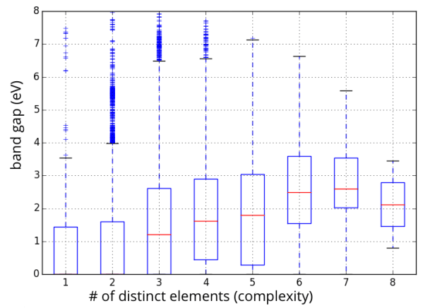
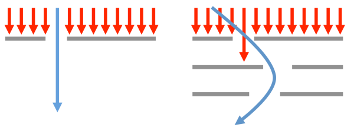

One of the biggest outstanding questions about our physical universe is whether alien life exists amongst the stars. Similarly, the universe of materials is a strange, complex, and fascinating space where one of the biggest questions is whether new compounds with fantastic properties exist. But is anything out there? If you are optimistic about the existence of alien life, perhaps you share one belief with materials scientists that employ high-throughput screening to discover compounds: that given enough attempts, improbable events can become nearly inevitable. After all, shouldn’t winning the lottery be expected when one holds enough tickets?
In the search for alien life, the assumption that immense quantity should overpower rarity yields a conundrum referred to as “Fermi’s Paradox” . Fermi’s Paradox describes a set of back-of-the-envelope mathematics that predicts that, in all likelihood, we really ought to have stumbled into intelligent life within our galaxy by now (or rather, it should have stumbled into us). The details are encapsulated in a characteristically brilliant Wait But Why blog post,[1] but the basic ingredients of this analysis are (i) there are hundreds of billions of stars in our galaxy, (ii) amongst all those possibilities, a single civilization capable of interstellar travel could likely colonize our entire galaxy (that includes us) within a few million years, and (iii) Earth has been around for 4.5 billion years. So where are our alien neighbors? And what does this have to do with materials science?
In the past decade or so of high-throughput computations based on density functional theory (DFT), many materials scientists have asked a scaled-down and modified version of what is essentially the Fermi Paradox. I’ll refer to it as the “Materials Paradox”: why, if researchers can now screen tens or even hundreds of thousands of materials, isn’t there any major new material resulting from high-throughput screening that is either in the market or being seriously invested in by industry? Certainly there have been moderate successes.[2] But given all the calculated trials, one might reasonably expect that we would have by now uncovered something truly world-changing. So where – in the vast unexplored regions of chemical space – are the alternate and superior forms of technological materials, and why can’t we seem to find them?
The Materials Paradox has serious practical implications. If we can understand what makes high-throughput attempts successful (or not), perhaps we can modify our approach in important ways. What follows are some speculative thoughts (some more plausible than others) about why high-throughput materials discovery might be more difficult than it appears. In the spirit of the Wait But Why article on the Fermi Paradox, I’ve grouped these explanations into several categories.
Category A: There aren’t many interesting new materials to find
Possibility 1: The scientific process is already highly optimized to find good materials
Under this scenario, the best materials for a new technology are picked clean by the research community in a short amount of time, leaving little room for computational searches.
There is some evidence to indicate that the research community can be very efficient. Following the invention of the first Li-ion battery prototype in 1976 by Stanley Whittingham at Exxon, who employed a Li metal anode and a LiTiS2 cathode, other researchers rapidly identified better materials that still form the basis of most Li-ion batteries today (the graphite anode was developed between 1977 and 1980, and the LiCoO2 transition metal oxide cathode was identified in 1979). Although further materials optimization was necessary, and despite it taking until 1991 for commercialization to occur, the initial materials identification was remarkably quick. That said, Li-ion batteries can simultaneously be used as a counterexample if one believes that better materials are out there. In the past 3 to 4 decades, and despite a large amount of time and effort invested from many different players, there have only been a handful of significantly different and viable alternatives discovered. Thus, those that are optimistic about new types of Li-ion batteries must also admit that “business as usual” has not been completely fruitful.
Possibility 2: The range of possible materials properties is already well-covered by relatively “simple” materials, and it’s better to start with one of those and optimize
This possibility argues that there is no need to stretch to the outer reaches of the materials universe to optimize for an application; you can get pretty close to the best material using only “simple” compounds. That is, the low-hanging fruit is just as tasty as the difficult-to-reach fruit. To illustrate this idea, below is a range of DFT-GGA band gaps for about 50,000 compounds in the Materials Project, separated by the number of distinct elements in the compound (a proxy for complexity):

Statistics on range of accessible band gaps for elements, binaries, ternaries, and higher-order compounds.
The important thing to note about the figure above is that even “simple” binary compounds allow one to access almost a continuous range of band gap values from 0 to 8 eV (note that the average value of the band gap will be biased by the choice of compounds in the Materials Project, so I am focusing on the range). If one can access the desired properties with a simple binary material, which might also be easier to manufacture and already well-studied (e.g., how to synthesize it, process it, etc.), there may be little motivation to find more complex formulations that might only be moderately more promising. More research would need to be conducted before taking this possibility too seriously; in particular, one should at least consider the span of combinations of properties (rather than a single property such as band gap) that can be accessed by simple materials against those that are more complex.
Category B: Better materials exist, but there are logical reasons why we haven’t identified them with high-throughput screening
Possibility 3: DFT-based screening is not accurate or predictive enough
This explanation is one of the most common objections to DFT-based screening: materials are too complex to be assigned “pass”/”fail” marks by a theory that has well-known practical limitations.[3] It is a criticism also faced by those searching for extraterrestrial life (how do we know that our methods for identifying life are reliable and complete?) Some even argue that the screening process is destructive because one risks the possibility of miscalculating and reporting a “hit” compound as having poor properties, leading the research community off target. When weighing these criticisms, however, it is important to remember that all types of inquiry (whether computational or experimental) always carry at least some risk of missing an important result. Indeed, sometimes the situation is reversed, and calculations provide a fresh perspective on a material that is underperforming experimentally. It is only a problem insofar as one trusts a single measurement rather than weighing it against other knowledge. Furthermore, the potential for miscalculating can often be estimated, researched, and improved upon, and some residual uncertainty is not the same as lack of predictive power. Finally, practitioners would argue, the high-throughput screening process allows one to examine thousands of candidates that would typically be ignored completely, and thus the overall chances of finding a “hit” should certainly be improved versus limiting analysis to only the small set of compounds that could be intensively characterized with the same level of resources.
Possibility 4: “Conspiring filters” make it difficult for current high-throughput type approaches to succeed
In discussions of Fermi’s Paradox, the notion of a “great filter” is a situation that is exceedingly difficult for life to overcome on its trajectory to interstellar travel. Examples of potential “great filters” include meeting the conditions needed for life to form, evolving from prokaryotic to eukaryotic cells, surviving cataclysmic events such as comet collisions, or destroying oneself through the development of nuclear weapons or patricidal artificial intelligence.
In materials science, there may not be so many individual “great filters” to worry about, but there are plenty of examples of what I consider “conspiring filters”, i.e., a set of two or more constraints that are exceedingly difficult to pass simultaneously. Most recently, for example, I published an article about the difficulty of designing Li ion cathode materials that are both intrinsically safe and possess high voltage.[4] Compounds that exhibit both of these properties always appear to fail on a third criteria, the number of Li ions that can be stored. Conspiring filters crop up everywhere in materials design, for example in the development of steels that balance strength and ductility.
When faced with conspiring filters, finding a solution can be akin to inventing the materials equivalent of a “curveball”, i.e. not a better, faster version of the same old pitch but rather a genuinely new and perhaps wild idea that operates on different physical principles:

One can navigate through single filters using “more of the same”, but passing through conspiring filters may require a “curveball” strategy
Developing these “curveball” materials is (by definition) not straightforward and can also be difficult to implement.[5] For example, to overcome the strength versus ductility problem in steel design, one can employ non-obvious mechanisms such as transition induced plasticity (TRIP) or twinning induced plasticity (TWIP), which transform the local microstructure in the deformed regions of the material. A barrage of high-throughput computations would not find these mechanisms because they involve mixing phases at the microstructural level rather than identifying a single crystal structure that possesses all the desired properties. Similarly, high-throughput searches as they are conducted today would not identify hybrid perovskite solar cells (which mix organic and inorganic components) because that degree of substitutional freedom is typically not included in searches. In this latter case, the computations could be adapted to include both inorganic and organic components in the future, but this strategy must be specified a priori. The problem of navigating around conspiring filters without necessarily attacking “head-on” is one of the areas in which the high-throughput materials design community should spend more time on.
Category C: There exist external forces that prevent new materials discoveries from replacing incumbents
Possibility 5: Better materials can be found, but they suffer from arrested development due to unfair comparisons
Once identified, the performance of a material invariably improves over time as the research and development community continually test modifications and permutations to composition and processing. The NREL solar efficiency chart, for example, is one way to clearly see the performance of a set of materials improving over time.[6] The issue is that when new materials are identified, they are often immediately compared against the current performance of incumbents that have benefited from decades of optimization. Like comparing the height of a child versus that of a teenager, it can be very difficult to know who will eventually be the tallest. Early stage materials competing for an established market are often abandoned relatively quickly unless they can display something flashy (perhaps extreme performance in one attribute, at the expense of others) that will get the attention of a high-profile journal. It is possible that some very good materials have been nipped in the bud before having a chance to flower.
Category D: Just give it a bit more time!
Possibility 6: It’s too early to be making strong statements about high-throughput
High-throughput computational screening is only a little over a decade old, and only recently is it being adopted by more research groups than can be counted on one hand. It will take time for the field to hit its stride. As one encouraging example, I just got word that one of the earliest high-throughput screening studies (from the early 2000s), which was performed as part of a consulting project, is now seeing its predictions reach the consumer testing phase (I’m being purposefully cautious of unintentionally revealing any industry details I shouldn’t). Other examples might follow in due time, and “moderate successes” already appear to be piling up.[7] Perhaps it is inevitable that one day we will all purchase a device made of materials that were developed using computational screening techniques. Of course, one must be a little optimistic.
And who knows – maybe the same will be true for the aliens?
Footnotes:
[1] Wait But Why is currently one of my favorite blogs, and its treatment of the Fermi Paradox can be found here.
[2] Some colleagues and I covered some examples of new materials stemming from high-throughput DFT (but not yet used by industry) in this paper.
[3] I wrote a related blog article on this topic called “Here be dragons: should you trust a computational prediction?”.
[4] The paper discussing voltage versus intrinsic thermal stability in batteries can be found here.
[5] Apparently, the curveball pitch was difficult to implement in practice. Not only did the pitcher need to learn the mechanics of throwing this new pitch, but the catcher needed to change position entirely, moving from about 20-25 feet behind the batter (as was apparently typical in the day) to immediately behind the plate. When a big change is introduced, the whole system might need to be re-thought to make it work.
[6] The NREL solar efficiency chart can be found here.
[7] I have been trying to keep up with the list of materials predicted by computation and validated by experiment, and it certainly seems to be growing quickly.